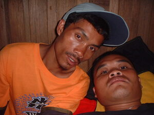
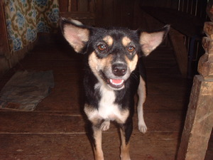

tengteng  
/tɔŋtɔŋ/
v_rt.
“look_at”
vt.
for someone (egtengteng, migtengteng/intengteng, tengteng, agent, eg><ø-) to look at (somebody or something) (egtengtengan, intengtengan/migtengtengan/pigtengtengan, tengtengi, location, eg><an-)
Wrd.Gloss: look_at
Egtengteng key te salida.
We will looked a movie.
Syn. pitew
Eng. look at; gaze; observe
Tag. tumingín; tingnán
Ceb. tan-aw
Ilo.: kitáen
OCM: Sensation and Perception (151)
DDP: Look (2.3.1.1)
Online dict status: -
Usage level: M
v.
for someone or something (egtengtengan, intengtengan/migtengtengan/pigtengtengan, tengtengi, location, eg><an-rdpCV-) to have hope placed on them/it
Datu Gawilan ka migtengtengan ta te timpu te ribildi.
Datu Gawilan was the one we looked to during the time of the rebellion.
Egtengtengan ta ke nekey ka puhawang din.
We will look if what is her plan.
Eng. hope
v.
for someone (egtetengteng, migtetengteng/intetengteng, tetengteng, agent, eg><ø-rdpCV-) to stare for an extended period of time at something or someone (egtetengtengan, intetengtengan/migtetengtengan/pigtetengtengan, tetengtengi, location, eg><an-rdpCV-)
O. Syn. sil-ap
DDP: Look (2.3.1.1)
Online dict status: -
Usage level: M
Updated by: RJH,JLM,QDL,RAA
Last updated: 22/Dec/2009
"pegtengteng" in text "A Father Tells His Children about School"
"tengteng" in text "A Father Tells His Children about School"
"Tengtengi" in healthbook "Migpamawian ni Inuk ka sumbaley rin ne migpangaliskis"
"egpatengtengan" in healthbook "Migsistu si Wini"
"egkatengtengan" in healthbook "Miggendiye te huspital si Mirsi ka migtibi"
"egpatengteng" in healthbook "Eg-ay-ayaran ta ka me ngipen ta"
"tengtengan" in healthbook "Ka an-anayan ne peg-uyamu ni Lolita te mig-anak"
"Tetengteng" in song "Geyinawa te Manama"
"tengteng" in song "Igkeupii te me etew"
"pegtengteng" in song "Kene din eg-alam"
This page last updated: 28-Dec-2019
Copyright © 2009-2014, Matigsalug Language Christian Association, Inc